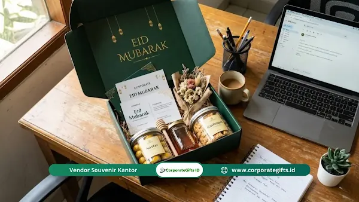

Corporate Gifts ID - Isi hampers lebaran kantor terbaik adalah barang fungsional yang benar-benar terpakai dalam rutinitas kerja harian: paket pemulihan kesehatan (madu murni, teh herbal artisan, suplemen vitamin), perlengkapan meja kerja ergonomis (penyangga laptop, pengisi daya nirkabel, lampu meja kerja cerdas), tanaman sukulen mini, hingga produk kurasi UMKM lokal dalam kemasan ramah lingkungan. Bagi segmen mitra prioritas, alokasi anggaran berkisar antara Rp300 ribu hingga Rp1 juta per paket sudah sangat memadai untuk memancarkan impresi berkelas tanpa terkesan berlebihan.
Pernahkah Anda merasa antusias saat menerima kiriman parsel Idul Fitri dari rekanan bisnis, tetapi seketika merasa kecewa karena isinya hanyalah tumpukan biskuit kaleng massal atau pajangan dekoratif yang pada akhirnya hanya berdebu di sudut gudang kantor?
Kondisi ini kerap terjadi saat tim pengadaan terjebak dalam kebiasaan lama. Padahal, bingkisan tahunan memiliki manfaat hampers lebaran kantor yang sangat strategis dalam mempererat tali silaturahmi profesional. Tinggalkan kebiasaan membagikan parsel generik yang membosankan dan beralihlah ke konsep modern yang bernilai guna tinggi.
Poin Kunci Hampers Lebaran Kantor 2026:
- Pergeseran Paradigma: Dari parsel makanan manis sekali santap menjadi bingkisan fungsional yang menunjang kesehatan dan produktivitas kerja.
- Kurasi Solutif: Menghadirkan paket detoksifikasi herbal, organizer meja kerja rapi, serta perangkat pengisian daya nirkabel.
- Kemasan Berkelanjutan: Menggunakan teknik kain Furoshiki, kotak kayu pinus estetik, atau keranjang anyaman rotan yang dapat dipakai kembali.
- Penjenamaan Halus: Mengedepankan logo berukuran minimalis monokrom dan teknik deboss elegan agar barang percaya diri digunakan di ruang publik.
Mengapa Hampers Lebaran Kantor Harus Berubah dari Parsel Biasa?
Hampers lebaran kantor adalah paket bingkisan Idul Fitri yang didistribusikan korporasi kepada klien prioritas, dewan komisaris, rekan bisnis, maupun karyawan internal. Saat ini peranannya telah berevolusi dari sekadar formalitas tahunan menjadi medium diplomasi bisnis yang elegan.
Tumpukan makanan manis berkalori tinggi kini kian dihindari karena berisiko memicu masalah kesehatan pasca-perayaan. Alih-alih mengulang formula usang, perusahaan masa kini dituntut menerapkan prinsip berikut:
- Kualitas Fungsional Lebih Utama: Kalangan profesional menyukai cinderamata yang meringankan beban kerja harian dan mendukung kesehatan fisik mereka.
- Filosofi Empati Budaya: Nilai bingkisan tidak diukur semata-mata dari mahalnya harga, melainkan dari ketepatan kurasi dalam menjawab kebutuhan nyata sang penerima.
- Penguatan Loyalitas Jangka Panjang: Hadiah yang selaras dengan gaya hidup modern memperkokoh reputasi positif korporat dan menumbuhkan rasa saling percaya antarmitra usaha.
Apa Saja Ide Isi Hampers Lebaran Kantor Anti Mainstream?
Formula rahasia memilih isi hampers adalah menyediakan solusi atas kendala kerja harian yang kerap luput dari perhatian. Berikut kurasi item pilihan yang terbukti mengesankan bagi kolega kerja:
Paket Pemulihan Kesehatan Pasca Perayaan
- Minuman Detoksifikasi Herbal: Teh daun kelor, oolong artisan, atau seduhan rempah hangat membantu menetralisir tubuh setelah menyantap aneka santapan bersantan selama libur Lebaran.
- Penguat Imunitas Tubuh: Madu hutan murni bersertifikasi, propolis, dan multivitamin lengkap menjaga stamina saat kembali menghadapi rutinitas padat di kantor.
- Minyak Esensial Aromaterapi: Minyak lavender atau eucalyptus meredakan stres mental pasca perjalanan mudik yang melelahkan.
Catatan: Pastikan produk pangan dan suplemen telah mengantongi izin resmi BPOM serta label Halal Indonesia.

Paket hampers lebaran kantor fungsional berisi madu premium, diffuser meja, tumbler vakum, dan kartu benih ramah lingkungan.
Penyelamat Kewarasan di Atas Meja Kerja
- Organizer Kabel Silikon: Klip penjepit kabel menjaga permukaan meja kerja tetap rapi dari lilitan kabel charger dan mouse.
- Penyangga Laptop Ergonomis: Penyangga aluminium lipat membantu postur punggung dan leher tetap tegak saat berjam-jam menatap layar komputer.
- Alas Tetikus Kulit Custom: Mousepad kulit imitasi premium (PU leather) memberikan sentuhan mewah sekaligus kenyamanan pergelangan tangan.
Ekosistem Hijau dan Pelembap Udara
- Terarium Sukulen Rendah Perawatan: Tanaman hias mungil yang tahan di ruangan minim sinar matahari dan hanya butuh sedikit percikan air.
- Pelembap Udara Mini (Humidifier): Menjaga hidrasi kulit dan kelembapan saluran napas bagi staf yang bekerja di ruangan berpendingin udara (AC) seharian.
- Elemen Visual Penyejuk Mata: Paduan hijau dedaunan dan uap kabut halus memberikan relaksasi instan di tengah jadwal rapat maraton.
Perangkat Cerdas Penunjang Produktivitas
- Pengisi Daya Nirkabel (Wireless Charger): Mempermudah pengisian daya ponsel tanpa ribet mencolok kabel saat mobilitas sedang tinggi.
- Lampu Meja Cerdas Tiga Suhu Cahaya: Membantu mereduksi kelelahan retina mata saat harus menyelesaikan laporan keuangan larut malam.
- Pencetak Label Portabel (Label Maker): Membantu merapikan map arsip, binder proyek, dan dokumen kantor dengan rapi seketika.
| Kategori Isi Hampers | Contoh Item Fungsional | Target Profil Penerima | Nilai Manfaat & Efek Berkesan |
|---|---|---|---|
| Paket Pemulihan Kesehatan | Madu murni, teh herbal artisan, minyak esensial | Kolega senior, dewan pimpinan, staf lapangan | Memulihkan kebugaran tubuh pasca masa liburan |
| Peralatan Meja Ergonomis | Laptop stand lipat, kabel organizer, mousepad kulit | Karyawan WFH/WFO, divisi kreatif & IT | Meningkatkan kenyamanan postur dan kerapian meja |
| Perangkat Cerdas Digital | Wireless charging pad, lampu baca portabel | Klien VIP, eksekutif muda, mitra agensi | Menunjang mobilitas harian dengan sentuhan teknologi modern |
| Paket Ramah Lingkungan | Kertas benih tanam, kotak kayu pinus, furoshiki | Perusahaan berfokus ESG, komunitas binaan CSR | Mencerminkan kepedulian lingkungan tanpa meninggalkan limbah plastik |
Bagaimana Mengubah Kemasan Hampers Lebaran Menjadi Kado Fungsional?
Musim hari raya sering kali menghasilkan lonjakan sampah kemasan plastik sekali pakai. Dengan beralih ke wadah pakai ulang, kotak bingkisan Anda akan bertransformasi menjadi barang berharga di rumah penerima:
- Seni Bungkus Kain Furoshiki: Teknik melipat kain katun organik motif etnik yang anggun tanpa lem perekat. Kain ini dapat dialihfungsikan menjadi syal modis, serbet meja makan, maupun tas jinjing belanja cadangan.
- Kotak Kayu Pinus Berengsel: Kotak kayu bertekstur alami yang kokoh dapat beralih guna menjadi kotak penyimpanan jam tangan, perhiasan, atau koleksi perlengkapan minum teh.
- Keranjang Anyaman Serat Rotan: Anyaman tangan perajin lokal yang sangat estetis bila dipajang di ruang makan sebagai wadah buah segar atau toples bumbu dapur.
Bagaimana Penjenamaan Halus Membuat Hampers Kantor Selalu Dipakai?
Kekeliruan terbesar dalam strategi cinderamata perusahaan adalah memaksakan logo korporat berukuran raksasa di bagian depan produk. Hal ini justru membuat penerima enggan membawanya ke ranah publik.
- Prinsip Desain Monokrom Minimalis: Sematkan logo dalam proporsi kecil dengan warna senada badan produk agar kesan mewah tetap terpancar kuat.
- Teknik Grafir Laser atau Deboss: Tekstur cetak tenggelam tanpa tinta mencolok memberikan impresi visual yang sangat profesional pada material kulit maupun logam.
- Personalisasi Nama Penerima: Menyematkan inisial nama mitra bisnis pada notebook atau botol vakum melipatgandakan apresiasi emosional dan mencegah barang tersebut dihibahkan kepada pihak lain.
Pertanyaan Seputar Isi Hampers Lebaran Kantor (FAQ)
Kesimpulan
Meninggalkan konsep parsel biasa dan beralih ke hampers lebaran kantor fungsional adalah langkah cerdas dalam memaksimalkan anggaran apresiasi korporat. Kemasan yang menawan dan isi yang menjawab rutinitas harian akan memastikan bingkisan Anda senantiasa dikenang penuh kehangatan sepanjang tahun.
Rencanakan kebutuhan paket bingkisan Idul Fitri perusahaan Anda bersama kurator profesional Corporate Gifts ID. Hubungi kami untuk penawaran katalog resmi dan layanan kustomisasi logo eksklusif.